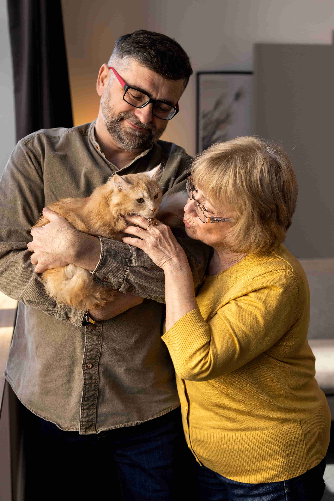

Projeto “Lar Temporário”
Este projeto conecta animais resgatados a lares temporários, onde recebem cuidados especiais até encontrarem um novo lar definitivo. Envolve seleção, treinamento e acompanhamento dos voluntários.
Este projeto conecta animais resgatados a lares temporários, onde recebem cuidados especiais até encontrarem um novo lar definitivo. Envolve seleção, treinamento e acompanhamento dos voluntários.
Promove campanhas de adoção consciente, esclarecendo sobre cuidados, direitos e deveres dos novos tutores. Organiza eventos para apresentação dos animais e acompanhamento pós-adoção.
Nosso programa de voluntariado oferece oportunidades para participar ativamente do cuidado, resgate e socialização dos animais acolhidos.
Aceitamos doações em dinheiro, ração, medicamentos e materiais para ajudar a manter o abrigo e promover a saúde dos bichinhos.